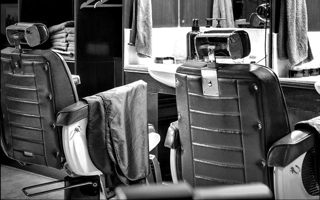

Randevu talebi
Seçimlerinizden hazır bir WhatsApp mesajı oluşturun. Göndermeden önce mesajın tamamını görürsünüz; gün ve saat bir taleptir, uygunluğu salon yazışarak onaylar.
WhatsApp kullanmıyorsanız mesajı kopyalayıp SMS olarak gönderebilir ya da doğrudan arayabilirsiniz: 0530 459 73 73
Hızlı randevu düğmeleri
Tek dokunuş: mesaj hazır, WhatsApp açılır. Günler bugünün tarihine ve çalışma saatlerine göre kendiliğinden hesaplanır.
Kendi seçiminiz
Çalışma saatleri
Pzt–Per ve Cmt 08:00–21:30, Cuma 08:00–21:00, Pazar 10:00–17:00
- Pazartesi08:00–21:30
- Salı08:00–21:30
- Çarşamba08:00–21:30
- Perşembe08:00–21:30
- Cuma08:00–21:00
- Cumartesi08:00–21:30
- Pazar10:00–17:00
Kapanışa yakın saatler için önceden yazmanız, beklemeden oturma ihtimalinizi artırır.
Sorular
Randevuyu nasıl alırım?
Bu sayfadaki araçla mesajınızı hazırlayıp WhatsApp'tan gönderin ya da 0530 459 73 73'ü arayın. Uygunluk yazışarak ya da telefonda netleşir.
Randevusuz gelebilir miyim?
Bu, o anki yoğunluğa bağlıdır. Gelmeden önce kısa bir mesaj ya da arama, beklemeden oturma ihtimalinizi artırır.
Fiyatları nereden öğrenirim?
Fiyatlar için WhatsApp'tan sorun, bilgi verelim. Birden fazla hizmeti birlikte yazarsanız hepsini tek seferde öğrenirsiniz.
Bir kesim ne kadar sürer?
Süre; kesimin türüne, saçın uzunluğuna ve sakal işlemi olup olmadığına göre değişir. Net süreyi randevu yazışmasında sorabilirsiniz.
Çocuğumu getirebilir miyim?
Çocuk tıraşı hizmetler arasında. Mesajınızda çocuğunuzun yaşını ve istediğiniz kesimi belirtmeniz hazırlığı kolaylaştırır.
Damat tıraşı için ne zaman yazmalıyım?
Özel günlerde saat planlaması önemlidir. Tarih netleşir netleşmez yazmanız, saatin rahatça ayarlanmasını sağlar.
Pazar günü açık mı?
Evet, pazar günleri 10:00–17:00 arası açık. Diğer günlerin saatleri yandaki listede.
Randevumu değiştirmem gerekirse?
Aynı WhatsApp yazışmasından ya da telefonla haber vermeniz yeterli; yeni bir saat birlikte belirlenir.
Mesaja ekleyin
Randevu mesajında şu bilgiler, size doğru zamanın ayrılmasını kolaylaştırır:
- Hangi hizmetler: saç, sakal, yıkama, bakım
- Kaç kişi geleceğiniz (baba ve oğul gibi)
- İstediğiniz kesimin referans fotoğrafı
- Esnek olduğunuz saat aralığı
- Varsa cilt hassasiyeti ya da özel bir istek

Temsili görsel